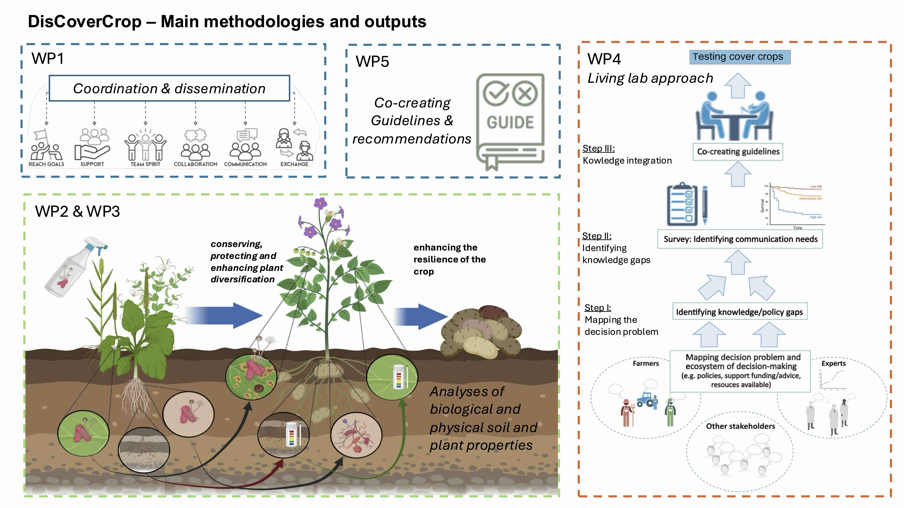
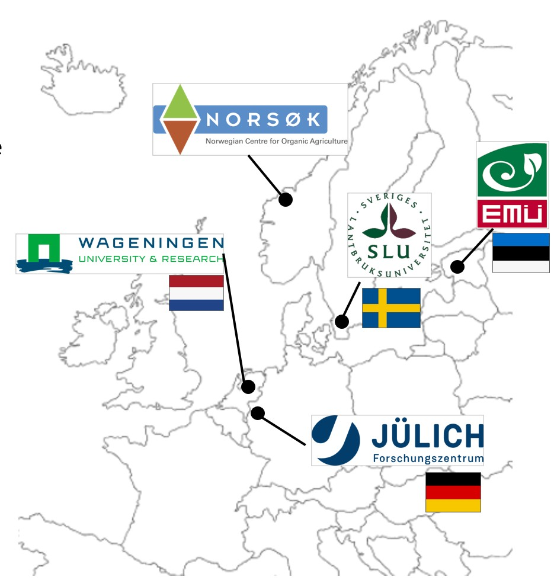

Project Objectives
Concept and Approach
DisCoverCrop comprises a multidisciplinary team with expertise in soil science, plant science, soil microbiology, integrated plant protection, communication research, living labs and agricultural advisory strategies—integrating natural, humanities and social sciences.
Our project is divided into 5 work packages focusing on farm-managed field trials in Sweden, Norway, Germany, Estonia and the Netherlands. These trials are co-designed using a multi-actor approach that puts practitioners at the center of research.
Main Objectives
DisCoverCrop aims to facilitate crop diversification for sustainable potato farming in Europe with the successful adoption of cover crops. Our core objectives are:
1. Soil Health
Assess the role of currently used and novel cover crops in improving soil health whilst reducing erosion, maintaining carbon storage, optimizing nutrient cycles.
2. Disease Regulation
Assess how cover crops can promote the natural regulation of potato diseases and improve both the performance and integration of microbial biocontrol agents within potato cropping practices.
3. Agroecological farmer knowledge
Evaluate the social considerations, local knowledge, concerns, and decision-making strategies of potato farmers working with cover crops to support adtoption of their use.
4. Knowledge Exchange
Facilitate knowledge exchange between scientists, farmers and stakeholders regarding potato production practices and solutions to enable the implementation of cover crops.
Work Packages
The project is organised into five interconnected work packages, each led by specialized partners:

WP1: Project Management & Dissemination
Lead: SLU (Sweden)
Coordination of the overall project, ensuring progress reporting, data management, and effective dissemination of results through stakeholder workshops, publications, field days, and digital communication channels including the project website and social media.
WP2: Biological Soil Effects
Lead: WUR (Netherlands)
Investigation of the effects of cover crops on soil biological parameters including microbial biodiversity, pathogen suppression, and the integration of biocontrol agents. Research trials will test the ability of cover crops to host beneficial microorganisms and increase overall soil biota diversity.
WP3: Physico-chemical Soil Effects
Lead: FZJ (Germany)
Analysis of induced changes in soil physico-chemical properties through cover cropping, including soil structure, nutrient availability, organic carbon content, and water holding capacity. Soil sampling is conducted in spring and at potato harvest to track seasonal changes.
WP4: Communication & Social Research
Lead: SLU (Sweden)
Identification of knowledge gaps, beliefs, and communication needs among farmers and advisors through workshops and surveys. Development of influence diagrams to understand decision-making strategies and creation of evidence-based guidelines for effective communication on cover crop use.
WP5: Agroecological Management
Lead: NORSØK (Norway)
Co-design of farmer-managed field trials, monitoring of implementation, and assessment of cover crop and potato performance. Synthesis of results into practical recommendations (best practices) for each partner country, including economic and quality assessments.
DisCoverCrop Field Trials
DisCoverCrop conducts field trials across five countries, covering different climate zones and farming systems:

Sweden (SLU)
Focus on starch potato production with collaboration from Lyckeby Starch AB. Trials include conventional management approaches.
Netherlands (WUR)
WUR-managed certified field sites following GLOBAL-GAP guidelines. Partnership with HZPC (seed potato trading), NAO (Dutch Potato Organisation), and BO Akkerbouw.
Germany (Research Station Dethlingen)
Research Station Dethlingen under the Lower Saxony Chamber of Agriculture. Focus on nutrient management and pathogen pressure in intensive potato cropping systems.
Norway
NORSØK's certified organic farm "Tingvoll Gard" with long-term field trials. Collaboration with Sunndalspotet AS and NLR (Norwegian Agricultural Advisory Service).
Estonia (EMU)
EMU-led trials addressing challenges of Northern climates. Partnership with Eesti Kartul and Talukartul for practical farmer engagement.